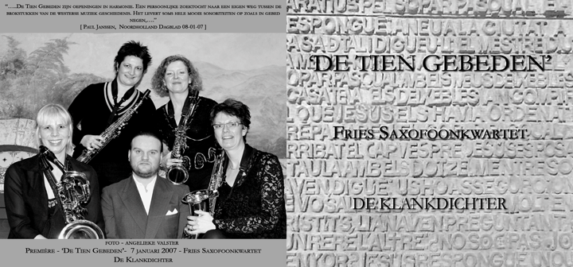

Wilt u deze cd plus bonustrack portvrij thuis ontvangen maak dan €11,- over naar bankrek.nr. 587428341 t.n.v. G. Schoonbeek te Hippolytushoef in Nederland. o.v.v. cd 'De Tien Gebeden'. Vergeet niet uw adres te vermelden.
Gebed nr. 4
Gebed nr. 6
Gebed nr. 8
Hoesontwerp en productie Bas Koppe